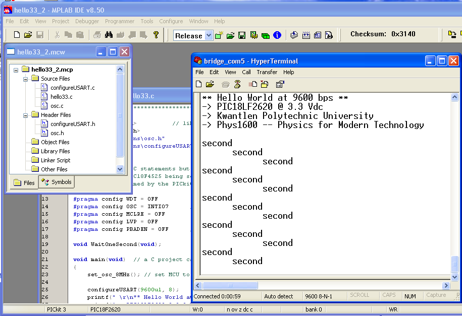

by Dan Peirce B.Sc.
Revised from Dokuwiki
This screen show shows the example being used with MPlabx
The program can also be used with MPlab 8.5

//*************************************************************************************** #include <stdio.h> // library containing printf() function #include <delays.h> #include "functions\osc.h" // library for set_osc_32MHz() #include "functions\configureUSART.h" // library for configureUSART(baud) // These are not C statements but directives to the C18 compiler. They result in configuration // bits in the PIC18F4525 being set in the flash memory. This configuration is set when the // PIC is programmed by the PICkit2 programmer and before any program starts to run in the PIC. #pragma config WDT = OFF #pragma config OSC = INTIO7 // puts osc/4 on pin 10 (0n 28 pin package) to check freq #pragma config MCLRE = OFF #pragma config LVP = OFF #pragma config PBADEN = OFF // PORTB<4:0> are digital IO void WaitOneSecond(void); void main(void) // a C project can only have one main() function { set_osc_8MHz(); // set MCU to run at 8 MHz configureUSART(115200ul, 8); printf(" \r\n** Hello World at 115200 bps **\r\n"); printf("-> PIC18LF2620 @ 3.3 Vdc\r\n"); printf("-> Kwantlen Polytechnic University \r\n"); printf("-> Phys1600 -- Physics for Modern Technology\r\n\r\n"); while(1) { printf("second\n"); WaitOneSecond(); printf("second\n"); WaitOneSecond(); printf("second\r\n"); WaitOneSecond(); } } void WaitOneSecond(void) { Delay10KTCYx(200); // wait 10 000 * 200 * TCY = 1.000 seconds }
//**************************************************************************************** #include <p18f2620.h> #include <usart.h> // library containing serial communtication functions #include <delays.h> // library containing delays - i.e. wait for time t void configureUSART(unsigned long baudrate, unsigned char osc_freq_MHz) { unsigned int spbrg; TRISCbits.TRISC6 = 0; // set TX (RC6) as output TRISCbits.TRISC7 = 1; // and RX (RC7) as input // For a 16-bit sbprg value with USART_BRIGH_HIGH setting. // Formula from datasheet is Baudrate = FOSC/ (4 * (spbrg + 1 )) spbrg = (unsigned int)( ((float)osc_freq_MHz * 1.0e6) /(4.0*(float)baudrate) + 0.5 - 1.0); OpenUSART( USART_TX_INT_OFF & USART_RX_INT_OFF & USART_ASYNCH_MODE & USART_EIGHT_BIT & USART_CONT_RX & USART_BRGH_HIGH, spbrg ); // OpenUSART is part of the C18 usart.h library BAUDCONbits.BRG16 = 1; // needed so we can use a 16-bit spbrg // Note that this is not discussed in the c18 Compiler Libraries guide Delay10KTCYx(1); // small 4x0.0125 s delay to allow communication speed to stabilize // part of the C18 delays.h library } // original delay was 0.0125 s but that was with Fosc at 32 MHz (now is 8MHz)
//**************************************************************************************** // // configureUSART.h // // Function to configure the PIC18F4525 serial communication (USART) module for operation // and set the baud rate (communication speed). The SparkFun LCD has 5 different // operating rates 2400, 4800, 9600 (default), 19200, and 38400. You can operate your P18f4525 // MCU at different frequencies. osc_freq_MHz can be 32, 16, 8, 4, 2, and 1. // // Note 38400 bps is not available at 1 MHz!!! // // You can communicate with your PC at much greater speeds up to 1 000 000 bps // // Dan Peirce and Mike Coombes, May 2011 // //**************************************************************************************** void configureUSART(unsigned long baudrate, unsigned char osc_freq_MHz);
/* file osc.c */ //*********************************************************************************** // set_osc_8MHz() // sets the oscillator from the default 1 MHz to 8 MHz //*********************************************************************************** #include <p18F2620.h> #include "osc.h" void set_osc_8MHz(void) { int i; OSCCONbits.IRCF2 = 1; // Set the OSCILLATOR Control Register to 8 MHz OSCCONbits.IRCF1 = 1; OSCCONbits.IRCF0 = 1; }
/* file osc.h */ void set_osc_8MHz(void);